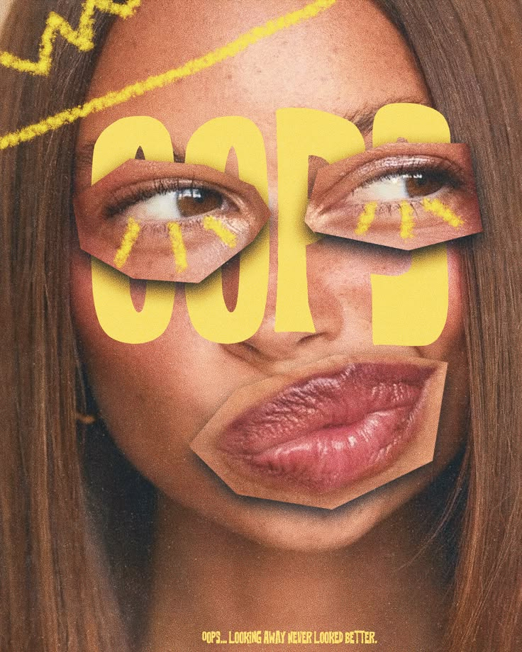

Welcome to Your Digital Appointment!
Welcome to my webpage! This serves as a creative space where design, imagination, and visual storytelling come into alignment. The name is a play on my name, Kyla, and the idea of a chiropractor bringing things back into proper alignment. In the same way that a chiropractor works to create balance within the body, I use creativity and design to bring ideas into balance visually. Whether I am creating graphics, editing videos, or experimenting with new forms of digital art, my goal is to make each project feel intentional and complete. I believe that good design is more than just making something look nice; it is about making every element work together. Ky.ropractor represents my approach to creativity: finding what works, adjusting what does not, and bringing the whole vision together.

@ ssamiimi on Instagram